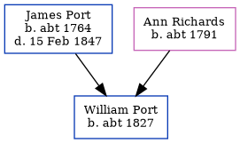

Sarah Port c1825 -
[ Home ] | [ Calendar ] | [ Surnames Index ] | [ Census Index ] | [ Family History ]The child of James Port and Ann Richards, Sarah Port, the four times great-aunt of Nigel Horne, was born in Kent, England c. 18251 and baptized in Herne, Kent, England on Jan 9, 1825. On Jun 6, 1841, she was living in Broomfield, Kent, England1.
Parents
- James was born c. 1764
- Ann was born c. 1791
Citations
- 1841 England, Wales & Scotland Census - Findmypast (was age 15)
Media
England Births & Baptisms 1538-1975 - R_884302616
England Births & Baptisms 1538-1975 - R_884933443
Kent Baptisms - GBPRS/CANT/B/96125489
1841 England, Wales & Scotland Census - GBC-1841-0013937708
Family Tree
Generated by ged2site. Last updated on Jun 11, 2024